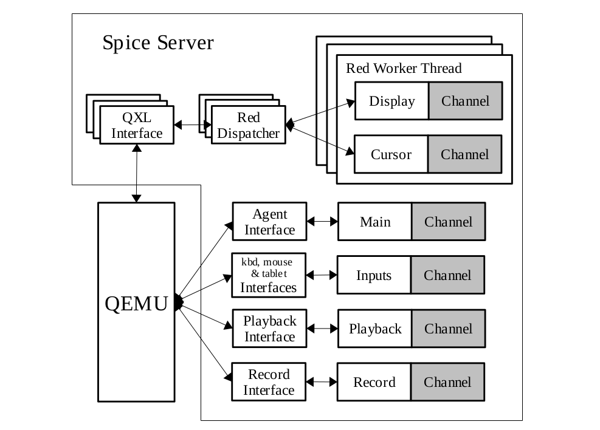
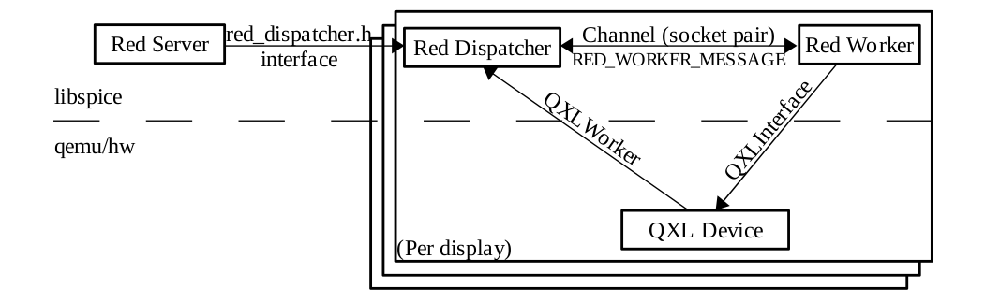

前言:本文是结合我自己阅读代码的心得总结而来,同时会忽略很多细节,只能作为阅读源码时的参考.如有错误,欢迎指正.
Spice简介
Spice是一个开源的云计算解决方案，使客户端能显示远程虚拟主机的操作界面并且使用其设备，如键盘，鼠标，声音等。Spice给用户提供了一种如同操作本地机器一样的体验，同时尽可能把密集的CPU和GPU任务在客户端上执行。Spice能在局域网和互联网间使用，而不减少用户体验。

Spice的基本组成包括:
- Spice协议
- Spice服务器
- Spice客户端
Spice的相关组件包括:
- QXL设备
- QXL驱动
其中,Spice服务器基于libspice（一个虚拟设备接口可插拔库）。VDI提供了一个通过软件组件来发布虚拟设备接口的标准方式，使得软件组件能够与虚拟设备交互。
- 服务器使用Spice协议与客户端交互。
- 服务器通过VDI接口与VDI主机程序（如QEMU）交互。
也就是说spice服务器处于主机与客户端中间,是整个Spice的核心所在.下面我们开始从代码层面分析spice服务器
更多资料查看本人翻译的spice新手文档Spice入门,以及官方网站
Spice server

图1是spice服务器的核心架构,贯穿整个源码的组织结构.
值得一提的是,spice server是作为一个库提供给qemu使用的,编译出来就是libspice,所以代码中没有main函数.
下面我们先了解一个server源码中使用到的一些核心概念,在看源码之前推荐大家先看一遍Spice入门,否则理解代码中的某些核心概念会很吃力.
部分宏定义
- SPICE_GNUC_DEPRECATED,其定义是
#define SPICE_GNUC_DEPRECATED __attribute__((__deprecated__))表示该函数以及被弃用,在编译时会给出警告 - SPICE_GNUC_VISIBLE,其定义是
#define SPICE_GNUC_VISIBLE __attribute__ ((visibility ("default")))用于控制符号的可见性,设置为对外可见.spice作为动态链接库给qemu使用,默认隐藏函数对外部的可见性,即外部文件不能调用库里面的函数,有这个声明的函数可以被外部文件调用,即为公共函数.
公共函数
Server的公共函数主要在两个头文件中:
- spice.h:与SpiceServer结构体相关的函数,是qemu调用spice的主要函数
- red_dispatcher.h:与QXL设备相关的函数
对server的分析,主要围绕这三个公共函数:
- spice_server_init:负责初始化spice_server
- spice_server_add_interface:给server注册VDI接口
- spice_server_add_client:处理qemu接收到的客户端连接消息
VDI接口
从图1中可以看到,VDI接口是spice server离qemu最近的一层,qemu主要是通过VDI接口来与spice交互的.
VDI接口的定义在spice.h中,结构体内部的函数指针实现都在qemu的源码里面(ui/spice-core.c)
- SpiceCoreInterface:核心接口,用于创建,添加,取消定时和监听事件
SpiceTimer *(*timer_add)(SpiceTimerFunc func, void *opaque);
void (*timer_start)(SpiceTimer *timer, uint32_t ms);
void (*timer_cancel)(SpiceTimer *timer);
void (*timer_remove)(SpiceTimer *timer);
SpiceWatch *(*watch_add)(int fd, int event_mask, SpiceWatchFunc func, void *opaque);
void (*watch_update_mask)(SpiceWatch *watch, int event_mask);
void (*watch_remove)(SpiceWatch *watch);
void (*channel_event)(int event, SpiceChannelEventInfo *info); - QXLInterface:QXL设备接口
void (*attache_worker)(QXLInstance *qin, QXLWorker *qxl_worker);
void (*set_compression_level)(QXLInstance *qin, int level);
void (*set_mm_time)(QXLInstance *qin, uint32_t mm_time);
void (*get_init_info)(QXLInstance *qin, QXLDevInitInfo *info);
int (*get_command)(QXLInstance *qin, struct QXLCommandExt *cmd);
int (*req_cmd_notification)(QXLInstance *qin);
void (*release_resource)(QXLInstance *qin, struct QXLReleaseInfoExt release_info);
int (*get_cursor_command)(QXLInstance *qin, struct QXLCommandExt *cmd);
int (*req_cursor_notification)(QXLInstance *qin);
void (*notify_update)(QXLInstance *qin, uint32_t update_id);
int (*flush_resources)(QXLInstance *qin);
void (*async_complete)(QXLInstance *qin, uint64_t cookie);
void (*update_area_complete)(QXLInstance *qin, uint32_t surface_id,struct QXLRect *updated_rects,uint32_t num_updated_rects);
void (*set_client_capabilities)(QXLInstance *qin,uint8_t client_present,uint8_t caps[58]);
/* returns 1 if the interface is supported, 0 otherwise.
* if monitors_config is NULL nothing is done except reporting the
* return code. */
int (*client_monitors_config)(QXLInstance *qin,VDAgentMonitorsConfig *monitors_config); - SpiceCharDeviceInterface:字符型设备接口
void (*state)(SpiceCharDeviceInstance *sin, int connected);
int (*write)(SpiceCharDeviceInstance *sin, const uint8_t *buf, int len);
int (*read)(SpiceCharDeviceInstance *sin, uint8_t *buf, int len);
void (*event)(SpiceCharDeviceInstance *sin, uint8_t event); - SpiceKbdInterface:键盘接口
void (*push_scan_freg)(SpiceKbdInstance *sin, uint8_t frag);
uint8_t (*get_leds)(SpiceKbdInstance *sin); - SpiceMigrateInterface:迁移接口
void (*migrate_connect_complete)(SpiceMigrateInstance *sin);
void (*migrate_end_complete)(SpiceMigrateInstance *sin); - SpiceMouseInterface:鼠标接口
void (*motion)(SpiceMouseInstance *sin, int dx, int dy, int dz,uint32_t buttons_state);
void (*buttons)(SpiceMouseInstance *sin, uint32_t buttons_state); - SpiceTabletInterface:触摸板接口
void (*set_logical_size)(SpiceTabletInstance* tablet, int width, int height);
void (*position)(SpiceTabletInstance* tablet, int x, int y, uint32_t buttons_state);
void (*wheel)(SpiceTabletInstance* tablet, int wheel_moution, uint32_t buttons_state);
void (*buttons)(SpiceTabletInstance* tablet, uint32_t buttons_state); - SpicePlaybackInterface:声音接口
- SpiceRecordInterface:录音接口
Channel
从图1可以看到,VDI接口之后即是Channel(QXLInterface比较特殊,这个后面再说).
Channel的主要作用是使用对应的TCP连接传输消息给客户端,保证其传输的可靠性,其本质是通道,不同的Channel传输不同的消息.
spice中主要有六种Channel:
- MainChannel:与客户端连接的建立和断开有关
- InputsChannel:跟鼠标,键盘,触摸板的输入有关
- DisplayChannel:跟图像传输有关
- CursorChannel:跟鼠标指针的显示有关
- PlaybackChannel:跟播放宿机的声音有关
- RecordChannel:跟录制客户端的声音有关
这六种Channel并不是平行的关系,虽然都继承与RedChannel,但是在实现以及逻辑上的作用有很大不同,大致可以分成三类.
- Main和Input通道被相应的处理函数控制(reds.c)
- Display和Cursor通道被每个display工作线程使用(red_worker.c)
- Playback和Record通道有它们各自的处理程序(snd_worker.c)
六种Channel中只有DisplayChannel和CursorChannel是单独在工作线程工作的,其他都是在qemu线程工作.
Dispatcher

前面提到Channel负责传输消息,而Dispatcher则负责处理消息,并且调度Channel.
Dispatcher使用socketpair来与外界交互,例如监听事件,传输结果等.
这里存在两种Dispatcher
- MainDispatcher:在qemu线程中监听socket事件,处理客户端连接的初始化,建立和断开等,跟MainChannel相关
- RedDispatcher:在worker线程中监听socket事件,处理QXL设备有关的消息,跟DisplayChannel,CursorChannel相关,图3描述的就是RedDispatcher的工作流程.在图1我们看到QXLInterface与其他接口不一样,与Channel的联系中间多了一个RedDispatcher,它们在单独的Worker线程中工作,提供了QEMU与接收的图像命令处理和渲染过程的独立性
RedWorker
RedWorker可以说是server的核心,80%代码跟它有关,毕竟它负责图像渲染和传输,这是spice最难最复杂的部分,涉及图像的压缩,渲染,局部刷新等核心技术.
RedWorker在单独线程上工作,通过QXLInterface与QEMU的QXL设备直接交互,同时控制DisplayChannel,CursorChannel,并且拥有自己的poll事件驱动核心.而其他的Channel都依赖于QEMU线程.
总结
- Spice server作为一个库给QEMU调用,用于支持Spice协议.
- server通过使用VDI接口与QEMU交互
- server通过使用Channel与客户端交互
- Dispatcher用于处理消息
- Channel用于传输消息
- 图像在RedWorker线程中处理
以上是我分析的server源代码的核心概念,为了方便理解,描述并不全面.其中关于迁移,声音,录音等功能并没有看过,我主要关注server的工作原理,在了解它工作流程之后,就好比有了一张地图,剩下的就是一个个去探险了.
当然了,没有代码的分析就是耍流氓.这篇就当是开胃菜,之后,我会结合代码,分析server的启动流程以及工作流程.先挖个坑.